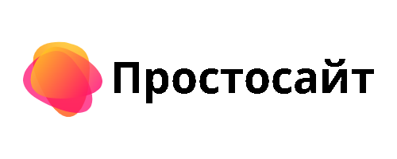

<!DOCTYPE html>
<html lang="en">
<head>
<meta charset="utf-8">
<title>Простосайт shiba inu</title>
</head>
</html>
<body>						

<h1>Shiba inu криптовалюта: прогноз цены и перспективы нового токена</h1>


<h3><p>В последнее время рынок мем-токенов стал очень популярным. Благодаря постоянному потоку положительных отзывов со стороны знаменитостей, некоторые мем-монеты достигли рекордного роста. При этом они не несут в себе никаких технологических новшеств. Это больше похоже на социальное явление. Любители быстрой наживы просто ищут следующую историю успеха после Dogecoin.

shiba inu криптовалюта

SHIB — один из последних токенов, появившихся на рынке. Анонимная команда разработчиков назвала его «экспериментом по децентрализованному спонтанному построению сообщества». Они объявили проект жизнеспособной альтернативой Doge, и даже его убийцей.</p><h3>

<h1>Обзор криптовалюты Shiba inu — кем и для чего создана</h1>


<h3><p>Проект создан в 2020 году, впервые был запущен через IEO Uniswap. Его создатели — группа анонимных разработчиков под руководством RYOSHI (@RyoshiResearch).

обзор shiba

Что произойдет, если проект криптовалюты будет на 100% управляться его сообществом? — этот вопрос стал главной идеей команды.

Официальный сайт проекта — shibatoken.com.

Основная его цель заключалась в создании токена ERC-20 по достаточно низкой цене, чтобы любой мог приобрести миллионы штук. Разработчики сознательно установили его стоимость значительно ниже одного цента. Стратегия состоит в том, чтобы сделать проект прибыльным за счет роста цены альткоина до $0,01.

Помимо шанса немного заработать, Shiba inu предназначен для привлечения внимания к криптовалютам. Когда люди видят очаровательного пса японской породы Сиба-ину, это создает позитивный настрой.
</p></h3>

<h1>Цена в рублях, курс к доллару</h1>


<h3><p>02 августа 2020 г. Шибу добавили на биржу Uniswap. Его стоимость тогда составляла $0,0000000421.

Первые крупные объемы появились в середине апреля 2021 г. Тогда стоимость токена выросла до $0,0000024 (почти в 50 раз, или на 5000%).

07 мая SHIB начал расти и всего за три дня подорожал до $0,00005.

Сейчас стоимость криптоактива близка к своему первоначальному значению перед майским ростом = $0,000008634. Цена в рублях — 0,0006357 руб.

цена Шиба ину

На момент написания статьи рыночная капитализация Shiba Inu составляет $3 381 494 523. (31 место в ТОП-100 по данным CoinMarketCap). Для сравнения, монета Doge находится на 7 месте при капитализации $40 024 654 506.

Альткоин добавлен на основные криптовалютные биржи, среди которых Binance, Uniswap, HitBTC, OKEx, Poloniex, KuCoin, Gate.io, Huobi Global.</p></h3>

<h1>График</h1>


<h3><p>На данном графике отражено восходящее движение криптоактива в мае, 2021 года (ТФ = 1 месяц). Затем цена откорректировалась на 75% вниз:

график

Подробную информацию по альткоину (рыночная капитализация, общее предложение, график, на каких биржах торгуется, социальные сети и т.д.)</p></h3>

<h1>Новости и перспективы Сиба-ину</h1>

<h3><p>SHIB — основной служебный токен экосистемы с неограниченным предложением. Он разработан по стандарту ERC-20 на основе Ethereum. Подобно Dogecoin, им можно легко оплачивать комиссии и вознаграждения.</p></h3>

<h1>Хеджирование цены DOGE</h1>

<h3><p>В протоколе Shiba существует еще один токен LEASH, который на CoinMarketCap имеет название «Doge Killer». Его цель — хеджирование стоимости DOGE на блокчейне ETH. Каждый день в 6:30 утра по всемирному координированному времени цена на LEASH будет снижаться до 1000/1 цены Догикоин. Разработчики намерены выпустить не более 100 000 шт. за все время существования проекта.</p></h3>

<h1>Новый токен BONE для стейкинга</h1>

<h3><p>Кроме этого, разработчики Шиба планируют запустить токен DeFi под названием BONE. Он будет играть жизненно важную роль в основном протоколе ShibaSwap DEX. В будущем пользователи смогут получать доход от его стейкинга.</p></h3>

<h1>Создание децентрализованной биржи</h1>


<h3><p>Также в планах проекта создать децентрализованную биржу ShibaSwap, которая позволит участникам сети обменивать свои токены ERC-20 на другие совместимые с ним прямо из своих кошельков. Такие площадки обычно более безопасны, чем централизованные биржи, так как не хранят криптовалюту на своих кошельках.</p></h3>

<h1>Инкубатор художников для рынка NFT</h1>

<h3><p>С целью создания «мемной» атмосферы и дополнительного ажиотажа вокруг проекта, разработчиками создан инкубатор лучших художников из сообщества Шиба. Они будут создавать уникальные NFT для того, чтобы стать частью рынка цифрового искусства.</p></h3>

<h1>Поддержка породы собак пожертвованиями</h1>


<h3><p>Шиба-ину, возможно, самая симпатичная собака, но не самая легкая в содержании из-за своего упрямства.

Для того, чтобы поддержать эту породу, сообщество организовало сбор пожертвований с помощью функции Amazon Smile. Теперь каждый участник сообщества может оказывать помощь собакам, делая покупки на сайте smile.amazon.com. От каждой покупки 0,5% автоматически переводится в фонд благотворительной организации.</p></h3>

<h1>Последние новости</h1>

<h3><p>07.11.21 крупный инвестор купил 20 трлн монет на общую сумму $1,15 млрд. Комиссия за транзакцию составила $0,004 ETH ($19,5).

Сеть кинотеатров AMC изучит возможность принимать платежи в Shiba Inu. Компания уже принимает Dogecoin и другие криптовалюты, однако ее генеральный директор Адам Арон планирует расширить список доступных к оплате цифровых активов.

19.11.21 токен добавлен на биржу EXMO.</p></h3>

<h1>Прогноз цены на 2021 год</h1>


<h3><p>Циркулирующее предложение на данный момент — около 394 000 000 000 000 токенов.

ВВП всего мира составляет около $84 трлн. На долю криптовалют приходится 1-2% ($840 млрд — $1,68 трлн).

Если рассчитать рыночную капитализацию Shiba при различной стоимости, получим такую картину:

$0,00001 = $3,94 млрд (неизбежно)
$0,0001 = $39,4 млрд (весьма вероятно)
$0,001 = $394 млрд (возможно, но не сейчас)
$0,01 = $3,94 трлн (через несколько лет)
$0,1 = $39,4 трлн (маловероятно).

Следовательно, стоимость данного цифрового актива никогда не достигнет даже $0,1.

Хотя делать прогнозы цен на криптовалюту сегодня достаточно сложно, однако есть много экспертов, которые берутся за это дело.

По данным американского сайта WalletInvestor.com (прогнозы цен, которые генерируются машинными алгоритмами) Shiba может вырасти до $0,000048 к концу 2021 года.

Аналитическая американская площадка digitalcoinprice.com дает прогноз в $0,00001270 на этот год:


прогноз цены

Сервис прогнозирования на основе алгоритмов WalletInvestor предполагает такую цену за монету:
<ul>
<li>2021 — $0,000018</li>
<li>2022 — $0,000028</li>
<li>2023 — $0,000039</li>
<li>2024 — $0,000050</li>
</ul>
</p><h3>

<h1>Стоит ли покупать токен SHIB</h1>


<h3><p>Важно понимать, что у Шиба-Ину был отличный старт.  Время для появления нового мем-токена было выбрано идеально — те, кто пропустили впечатляющий рост Doge, старались уловить новую волну.

Кроме этого, каждый новый листинг на бирже помогал еще больше поднять цену монеты.

Например, когда Binance разместил криптоактив, его стоимость моментально удвоилась. Генеральный директор Binance Чанпэн Чжао написал в тот день в своем Твиттере, что на бирже закончились депозитные адреса ETH из-за SHIB. Также он назвал проект захватывающим, но очень рискованным:

Цель Shiba inu — уловить импульс и задействовать его для дальнейшего расширения своей экосистемы, — заявил Чанпэн.

Затем разработчики отправили 505 триллионов токенов (ровно половину от общего количества) на адрес соучредителя Ethereum Виталика Бутерина в надежде на то, что он будет их держать. На тот момент их общая стоимость составляла около $2 млрд. Однако Виталик сразу же пожертвовал подаренную криптовалюту в один из фондов помощи Covid. Это привело к повышенному предложению на рынке и снижению цены криптоактива на 50%.

стоит ли покупать

Как видите, SHIB — это спекулятивный актив. Он был создан в качестве альтернативы другому спекулятивному токену DOGE. Однако за Шиба не стоят известные люди, которые его поддерживают. Большинство людей, которые его купили — это те, кто пропустил феноменальный рост Dogecoin и хотят испытать удачу.

В ближайшие месяцы SHIB может пережить бум на рынке криптовалют, как и любой другой альткоин. Но при условии восходящего движения биткоина.

Как видно на графике (ТФ 4 часа), в настоящее время цена находится в боковике.

покупать или нет Сиба ину

С 19 мая 2021 г. она консолидируется над уровнем поддержки $0,00000634, а минимумы постепенно повышаются. Под этим уровнем нужно установить стоп-лосс в случае, если вы решите приобрести данный криптоактив. Если цене удастся восстановиться и достичь своего пика в $0,00005, размер вложенных инвестиций увеличится на 650%.</p></h3>

<div>
    <p style="font-size: 20px; color:#1F9AFE;">
<a href="tup.html">what is so_Solona</a>
</p>
 </div>
 
 <div>
    <p style="font-size: 20px; color:#1F9AFE;">
<a href="index.html">what is so_Dogecoin</a>
</p>
 </div>
 
 <div>
    <p style="font-size: 20px; color:#1F9AFE;">
<a href="ron.html">what is so_Ethereum</a>
</p>
 </div>

  </body>
 </html>